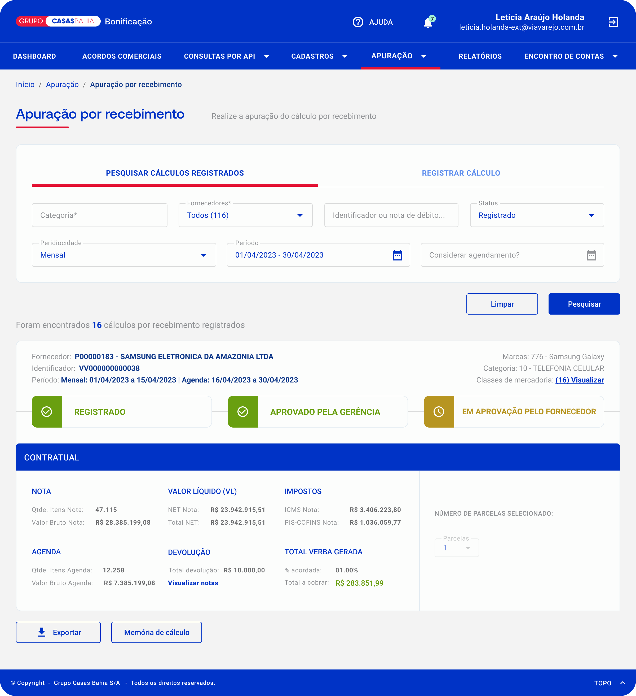
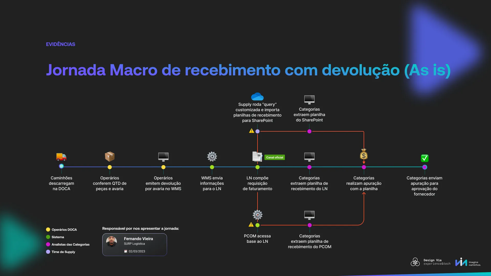
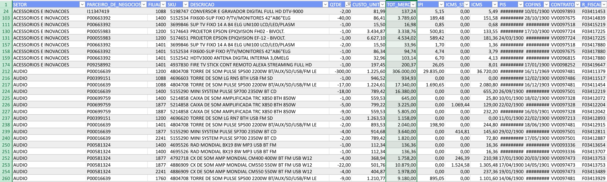
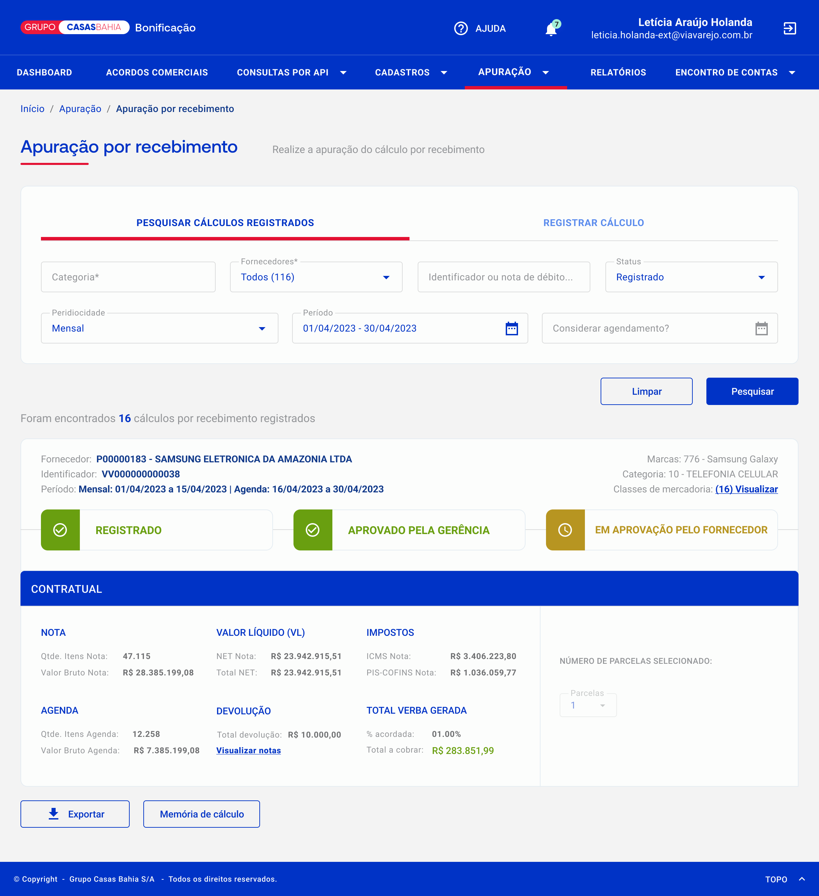

Julho de 2023
Conduzi o discovery e redesenhei o processo de bonificação e devoluções do Grupo Casas Bahia, antes feito manualmente em planilhas fora do sistema, sem rastreabilidade e expondo o Grupo Casas Bahia a divergências de valores com fornecedores na negociação. A solução trouxe todo o fluxo para dentro da plataforma, tornando o sistema a fonte única de verdade.

Este discovery foi desenvolvido para atender os times comerciais do Grupo Casas Bahia que realizam acordos de bonificação com fornecedores.
Bonificações são acordos contratuais entre o Grupo Casas Bahia e seus parceiros fornecedores: essas empresas pagam valores ao Grupo como incentivo comercial, como verbas de publicidade em canais digitais e físicos. Um exemplo comum é a marca Samsung pagar para ter destaque na loja, como uma área exclusiva para seus produtos. Esses valores são lançados direto no resultado do Grupo Casas Bahia.
Uma plataforma de bonificação já existia para controlar esses acordos. O problema estava no processo de fechamento mensal, que acontecia fora dela.
Em um discovery anterior sobre o processo de bonificação, identifiquei que o fechamento mensal com fornecedores concentrava riscos críticos. As devoluções de produtos eram tratadas fora da plataforma, em planilhas manuais, e esse gap se tornou o foco de um novo discovery.
Todo mês, os times comerciais precisavam cruzar os valores de bonificação acordados com os fornecedores com as devoluções de produtos do período para gerar as notas de débito com os valores corretos de bonificação.
Para isso, extraíam planilhas de devolução manualmente de outros sistemas e faziam o cruzamento fora da plataforma de bonificação. O dado chegava incompleto, sem padronização e sem rastreabilidade.
No fechamento, fornecedor e grupo tinham números diferentes. E o grupo não conseguia provar os seus.
Sem dados confiáveis de devolução, o Grupo Casas Bahia podia declarar números incorretos e perder bonificação que tinha direito a receber.
A falta de rastreabilidade também prejudicava o fornecedor, que podia ser cobrado por devoluções que não ocorreram de fato.
O discovery partiu de um outro discovery sobre bonificação onde encontramos um possível gap na apuração de devoluções. Antes de propor qualquer solução, precisávamos entender o processo real de devoluções, não o processo documentado.
Mapear como a apuração estava sendo feita na prática pelos times comerciais.
Descobrir qual sistema deveria ser a fonte de dados de devolução.
Propor uma solução de apuração dentro da plataforma de bonificação existente.
Os analistas usavam 2 canais além do canal correto para extrair as planilhas de devolução.
Nenhum dos dois trazia os impostos e valores completos. E nenhum analista tinha orientação formal sobre qual canal usar.

Entrevistamos as categorias comerciais para entender como a apuração era feita na prática. Os números confirmaram a falta de padronização: cada time considerava a devolução de um jeito, usava canais diferentes e olhava colunas diferentes da planilha.
Tínhamos duas direções possíveis:
Documentar os canais corretos de extração. Solução rápida, mas que não resolvia o problema raiz: os dados de devolução continuariam fora da plataforma, e o Grupo Casas Bahia continuaria vulnerável na negociação.
Trazer os dados de devolução para dentro da plataforma de bonificação, tornando o sistema a fonte única de verdade para o fechamento mensal.
Os erros não eram de atenção. Eram estruturais. Enquanto os dados de devolução ficassem fora do sistema, qualquer outra solução seria contorno, não correção.
O trade-off foi escopo: priorizamos o fluxo crítico de fechamento mensal e deixamos funcionalidades secundárias para fases seguintes.

Os analistas extraíam planilhas de sistemas externos, consolidavam os dados manualmente e faziam os cálculos fora da plataforma. Sem rastreabilidade, sem padronização, e sujeito a erros de canal.

Agora os analistas realizam todo o fechamento dentro da plataforma, com os dados de devolução integrados, rastreáveis e auditáveis. O Grupo Casas Bahia chega à negociação com os próprios números.
Um único fluxo de apuração, dentro da plataforma, substituindo múltiplas planilhas e canais sem padronização.
O Grupo Casas Bahia passou a chegar ao fechamento com dados próprios e rastreáveis, reduzindo a assimetria de informação com os fornecedores.
A redução de erros nos repasses, na casa dos milhões, estava em processo de contabilização no momento da entrega.
O ganho imediato não foi só operacional. Foi estratégico: o Grupo Casas Bahia deixou de depender dos números do fornecedor para validar o próprio fechamento.